Roof Command: what changed
Everything changed this week, newest first, with the exact place to look and check. App home: open the app. Updated Oct 24.
Working on now
Turnover Radar (Jack's pick, Oct 23)in progress
- Lists that follow neighborhood re-roof waves: homes with 4+ re-roof permits nearby in the last 90 days re-roofed 48x as often. Just-re-roofed homes drop off.
- Phases: the score per home, a Radar view in the app, blended into the Daily 50, then a back-test page proving it.
Big bets researchin progress
- What every competitor does, what roofers complain about, and the 5 to 8 features that would make Roof Command clearly different. You pick what gets built.
Done
Round 2 from your review: lines back on the Today map, 3D first, no Radar on Today, clean satellite on Stormsdone Oct 26 (local only)
- Today map: the light blue lines from the office to every home on today's route are back, each with a small arrowhead pointing at the home.
- Today's left panel is Up next and Inbox. The Radar tab is gone from Today.
- 3D is the default on the Today card and the house page, every time it opens. Photo is one tap away (3D | Photo) and is not remembered.
- Storms, Satellite view: the drawn roof lines and their lengths are off, because they sat a few feet off the photo. The roof shapes are in 3D houses.

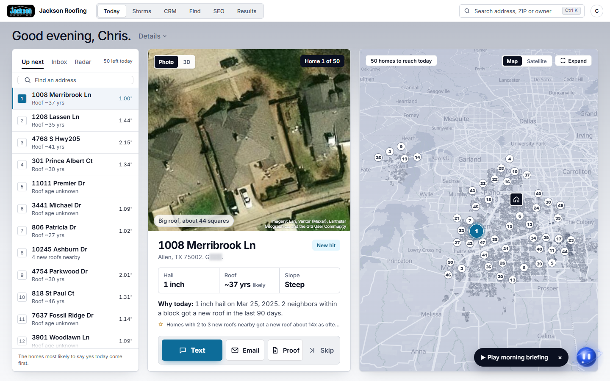

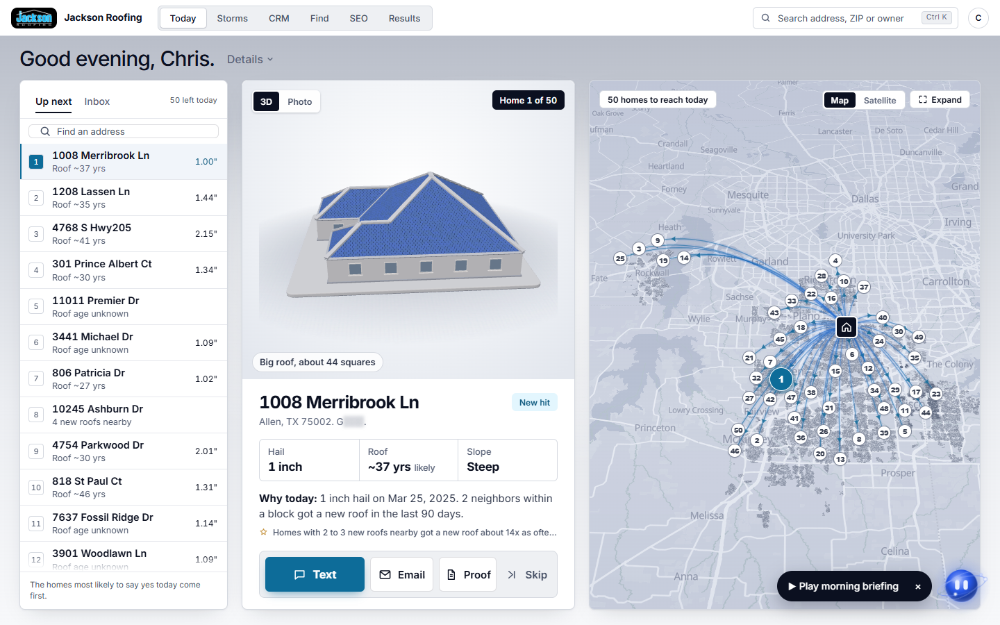
Check: open Today. Shots in tour/audit/cleanup (before2, after2, phones-after2.png). Not republished.
Cleanup from your click-through: a simpler house page, faster Storms, less year textdone Oct 26 (local only)
- House page: the address, then the score big ("48 of 100") and "Why it fits" in 3 or 4 short lines (hail size and date, roof age and how sure, neighbors' new roofs, roof size). One button, Text. Email, Book, Proof page and Proposal are in More.
- The right side is just this home, in sections that open and close: Home facts (owner initials, house, hail) open, then Hail, Activity, Score details, At the door and Roof folded with their names showing. The Pipeline is no longer squeezed in beside the house.
- Photo: a clean satellite photo cropped to the house, no yellow lines. "Show outline" puts them back. The switch is just Photo / 3D.
- Year text: "Built 1989, no new roof since 2017" now reads "Roof ~37 yrs" on Today, Find, the CRM and Storms. The years and the permit proof are still in Home facts and Score details.
- Storms: all 13 storms on file show in the timeline and list (it showed 2), with one filter: All, Big hail (1.5 inch+), 6 months. Smoother on a sharp laptop screen: panning and zooming went from about 49 to 58 frames a second, and the worst hitch from about 300 ms to 67 ms.
- Inbox: a "Hide panel" button on the house panel, and "Show house" brings it back. Results: one period switch (This week, This month, 90 days), the four counters you wanted. Find: one line saying what it is for. Calendar and Pipeline stay separate screens.

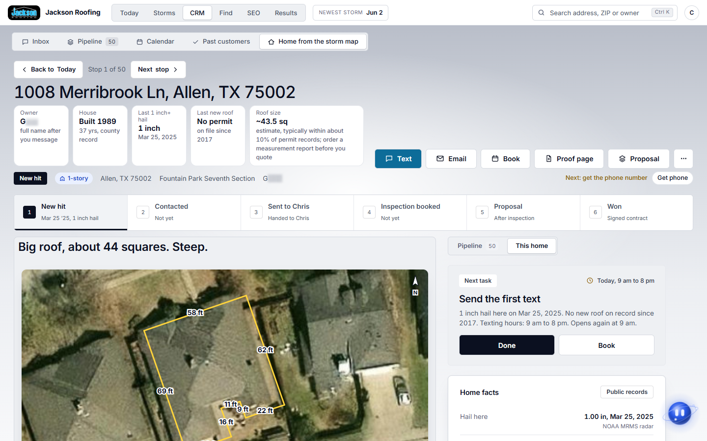

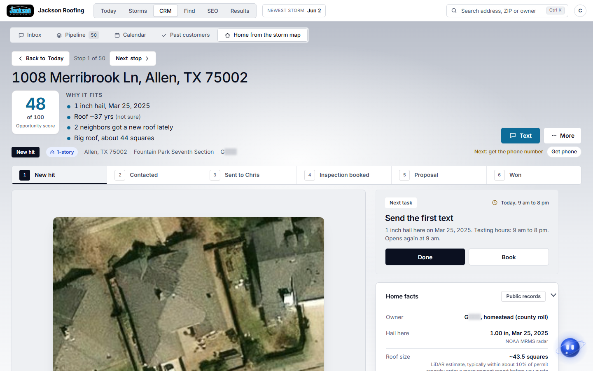
Check: open a house, Storms. All shots in tour/audit/cleanup (before, after, phones-after.png). Not republished.
Find homes: an Opportunity Score for every house, search, saved lists, best blocks and rep listsdone Oct 26 (local only)
- Every house gets a score from 0 to 100: roof age 35, storm 35, roof size and pitch 10, your contact history 10, neighbors' re-roofs 10. How sure we are about the roof (On record, Likely, Weak, Unknown) is shown next to it, never mixed into it. The weights live in one file.
- Back-tested like the Turnover Radar, on months it never saw (2025 on): in McKinney, Allen and Richardson the top tenth of scores held 26% of the homes that re-roofed next (2.6x a random home; top three tenths 2.6x, 1.3x, 1.2x). Across all of Collin: 20% (2.0x). A tuned set (roof age 20, storm 20, roof 10, neighbors 40) did better in both groups (28% and 23%), but it leans on neighbors' permits, which Plano and Frisco barely have, so it is a proposal for you, not switched on.
- A missing permit now says "Roof age unknown, built 1998", never "old roof". The Jun 2 alert honestly reads 6,546 homes hit, 0 old roofs on record, 4,193 older houses with roof age unknown (Frisco and Plano have no full permit records). The one-pager build follows the same split.
- Find homes (new tab): filter by roof age and how sure, hail size and dates, roof size, property type, city, ZIP or a drawn area, CRM status, score and OK to contact. Opted-out and do-not-contact homes stay visible, greyed, with the reason, and are never given out. No household or personal filters, only property facts.
- Save a search ("15+ year roofs after hail") as a daily list with an optional alert. Best blocks ranks streets by strong homes close together, storm and replies, not by house count, on a list and a map. Rep lists: add Jake, give him homes or a saved search, and he has his own list.
- "Why this home" on every record: the score with each part in plain words, details on tap (permit source, every storm with date and size, roof size as an estimate, neighbors, contact history, refresh dates).

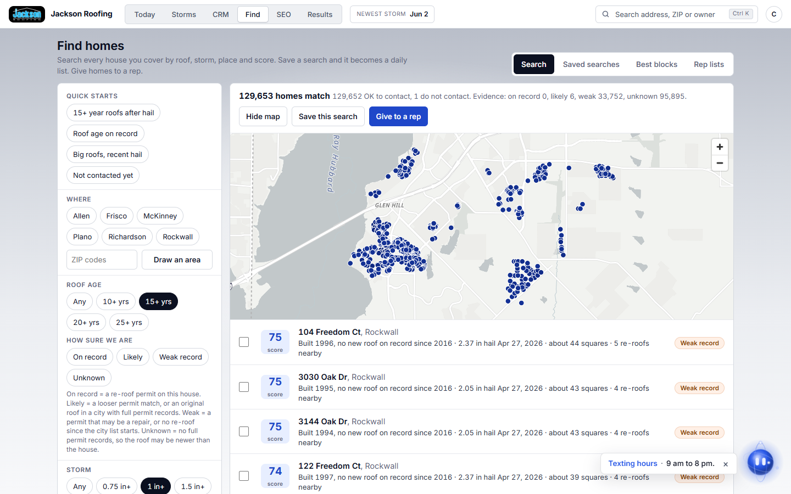

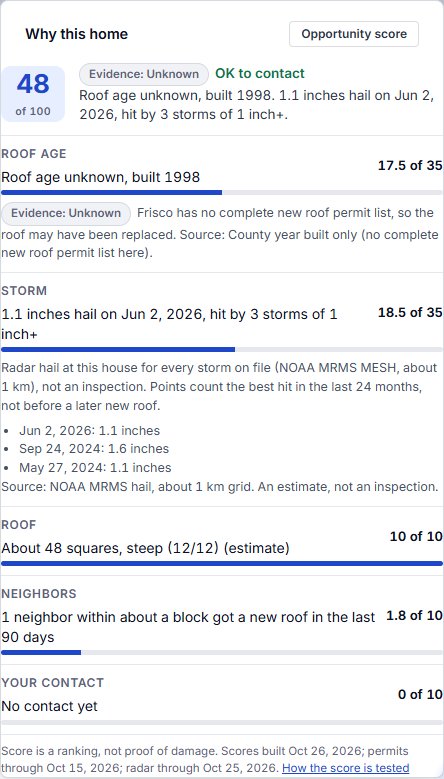
Check: open Find homes, the score back-test. Not republished: the public preview's money line changes with the honest split, your call.
Roof history you can trust: every roof year now shows its proof and how sure we aredone Oct 26 (local only)
- Every home now has one roof-history record: the year of its latest full re-roof, where it came from (which city's permit, with the permit number and a link), how the permit was tied to the house (property ID or address), and a confidence: High, Medium, Low or Unknown. A home with no permit says "Roof age unknown", never "old roof".
- A permit date is kept apart from a finished job: "permit issued Mar 2019" unless the city shows the final inspection passed.
- Repairs, partial jobs, solar panels, patio covers and commercial roofs no longer count as a new roof. Checked by hand on 50 permits: 47 right, and 29 of the 30 called "full re-roof" were right. Anything unclear (2,472 permits) goes to a review list instead of a guess.
- Pilot score (200 random homes per city with a solid, address-matched roof year): McKinney 48%, Allen 46%, Rockwall 41%, Richardson 23%, Frisco 4.5%, Plano 0%. Plano and Frisco only move once their records requests come back.
- Dallas: all of the city's roof permits since 2018 are pulled (about 17,000 full re-roofs), ready the day we add Dallas homes. The app has no City of Dallas homes yet.
Check: data/permits/evidence_summary.json (coverage per city, match rates, why permits did not match). Needs you: file the Plano and Frisco records requests (docs/permits/pia-requests.md).
Nimbus v2: talk instead of tapping, change the app by voice, real-time speech, calls (prototype), client memorydone Oct 26 (local only)
- Talk to Nimbus: a voice-first screen with one big orb, the answer, and cards for what he pulls up. Keep listening makes it a back-and-forth; tap to cut in. He reads and acts on everything: route, homes, storms, pipeline, inbox, calendar, past customers, Results, SEO.
- Change the app by talking: "make my route 30 homes", "only show me Allen and McKinney", "text hours 10 to 7" (never outside Texas hours), "rename Sent to Chris to Sent to owner", "make the text sound more casual", "add a column for insurance company", "turn off the morning briefing". Each one: "Done. Want to keep it?" and Undo. Anything else goes to Wing as a request.
- Client memory: "who's the lady on Merribrook that wanted a Thursday inspection?" finds the home, the booking and the history; name and phone only on a tap, and every look is logged.
- Real-time speech: answers are spoken sentence by sentence, first sound about a quarter second after the answer (measured). Calls to the roofer (briefing, reply alert, calling Nimbus from the truck) are built as a prototype and only need a phone number and Jack's yes. Never homeowners.

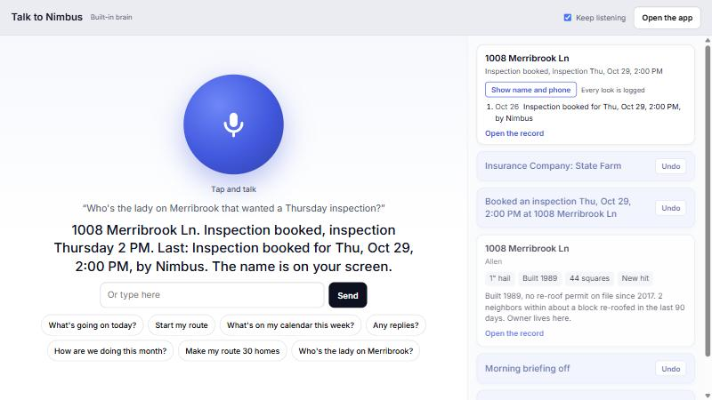

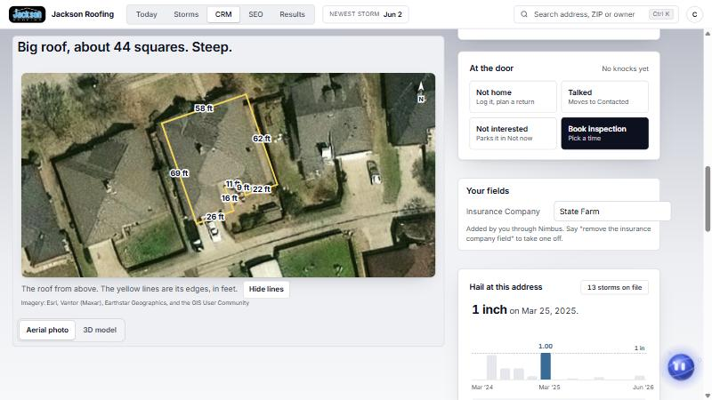
Check: open Talk to Nimbus and type "make my route 30 homes". Needs your yes: Anthropic credit (Claude brain), a phone number for calls, a voice plan.
Nimbus morning briefing and truck mode (hands-free route for reps)done Oct 26 (local only)
- Morning briefing: the first time the app opens each day, Nimbus says the newest storm and homes hit (only when it is new), the route count, inspections today and replies waiting, then "Want me to start it?". A big Play briefing button shows when the phone blocks sound until a tap. Turn it off in Nimbus settings. Ask any time: "what's going on today?"
- Truck mode (phone first): one stop at a time, big type, one giant talk button. Nimbus reads the stop in one sentence ("Next: 1208 Lassen Lane, built 1991, inch and a half hail, no new roof since 2015"). Say or tap No answer, Talked (and "book Thursday at 2"), Not interested, Skip, Next, Directions (opens the phone's maps app) or Text (opens the filled text, you tap Send). The screen stays on.
- Nimbus understands messier talk now ("hey what's goin on today", "that house on Merribrook, who's that", "book em Thursday around 2", "nobody was home, put that down").

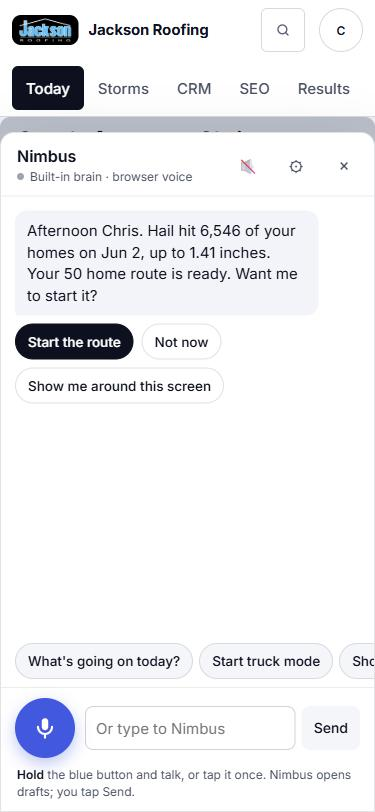

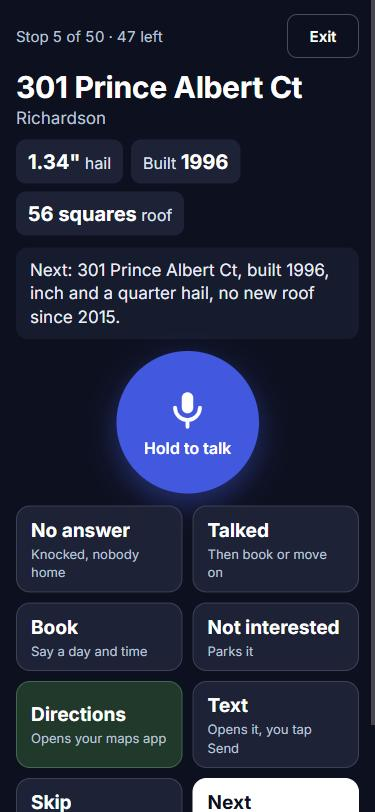
Check on a phone size: open Today with the briefing, tap Start the route. Needs your yes: Anthropic credit for the Claude brain, and a voice pick (samples in the notes folder).
Roof Command updates itself on a new storm, in the cloud, with the laptop offdone Oct 26
- A private GitHub repo (wingdigital26-maker/roof-command) checks NOAA every hour from March to October and every 3 hours the rest of the year. Free sources, no API keys.
- Quiet hour: a 10-second check, nothing changes. New storm with 1 inch+ hail on the roofer's homes: the storm data, the Daily 50 and the morning-after alert go to Supabase (read back to confirm), the public preview is rebuilt with every safety check and pushed, and the storm is saved in the repo.
- Two failed runs in a row open a GitHub issue and send an ntfy phone push. The next clean run closes it.
- No owner names, contacts or keys in the repo: a guarded copy of the app (paths, keys, emails, phones, names) is checked before every push, with no git history.
- Tested: the Jun 2 storm replayed in the cloud (6,546 homes hit, 4,193 old roofs, same as the app) and a clean real run. The replay built the full public preview with every leak guard passing (a dry run, so nothing was pushed). The old once-a-day cloud job (roof-watch-ci) is switched off. The laptop StormWatch task stays on as a backup and for the permits refresh.
Check: the storm-pipeline runs (green = fine, each run's summary says quiet or NEW STORM); issues stay empty while it is healthy.
Plain words on the CRM and Storms screens, Home facts clear of Nimbus, "50 homes to reach today"done Oct 26 (local only)
- CRM and Storms read in plain words: "1 inch+ hail", "1.3 inches", "New roofs", "steep", no "radar" or "LiDAR" on the surface. Home facts and the measurements tab keep the measured detail on purpose.
- On the record, the right column now stops short of Nimbus's corner, so no fact row ends under him ("Last re-roof ... since 2017" reads in full).
- Today's map: the "0 sent, 0 scheduled, 50 to go" pill now says "50 homes to reach today" (plus "3 done" or "2 set for later" when there are any).

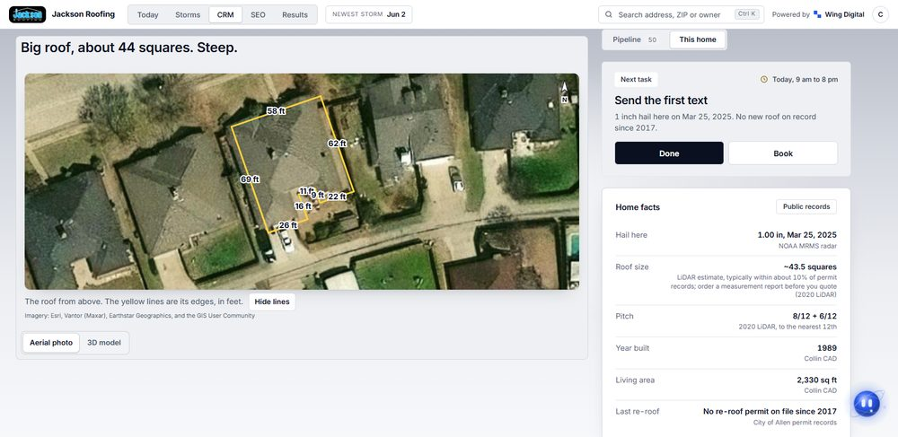

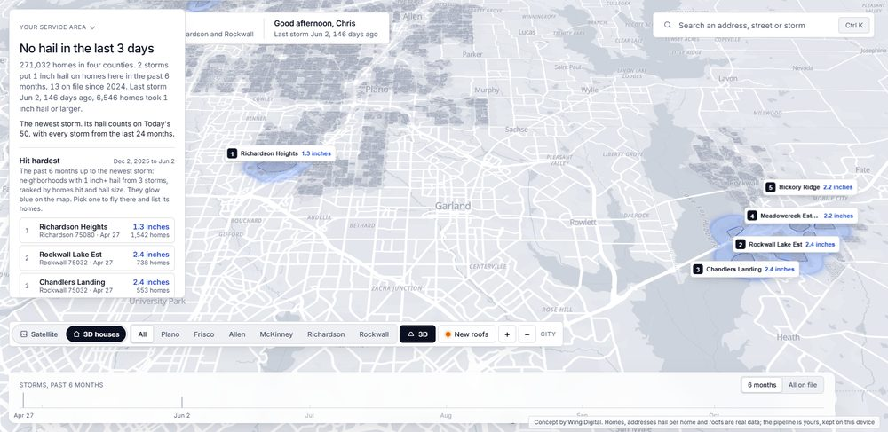

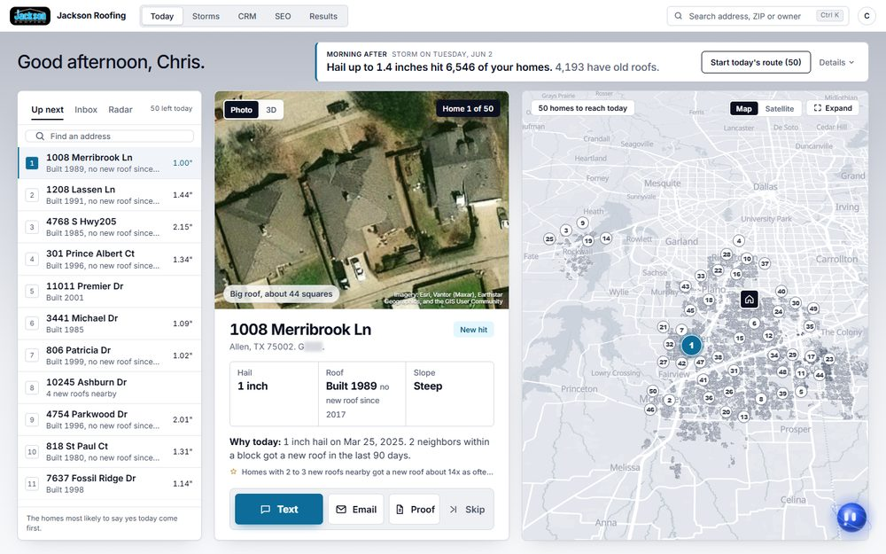
Check: open Storms, then the CRM and a home's record.
Nimbus is a personal assistant: talk, and he runs the app for youdone Oct 26 (local only)
- Tap the blue Nimbus ball. Hold the big blue button and talk (or tap it once, or type). He answers in one or two short spoken sentences. Tap the button while he talks to cut him off.
- He does the clicking: "show me today's route", "open the next house", "what hit last night?", "text this homeowner the storm message" (opens the filled text, you tap Send, he never sends), "book an inspection Tuesday at 3", "mark this one no answer", "add a past customer", "how many inspections this week?", "switch the map to satellite". Every action rings the button or card he touches and shows in the chat with Undo.
- He explains in plain words from the home on screen: "why is this house on my list?", "how sure is the roof size?" (LiDAR, within about 10 percent, measure before ordering), "what is the Turnover Radar?". No insurance or deductible promises.
- First time it opens he offers a 30 second spoken tour of the screen. On a phone the sheet drops to a short bar while he works, so you see the screen change.
- Brains: Claude (through a small local server, keys never in the page) when it runs, else a built-in brain that needs no keys. The public preview would be demo mode, labeled. Voice: the browser's own voice for free; ElevenLabs is an option in settings and stops itself before the free monthly limit. Each conversation is logged on this computer per roofer.

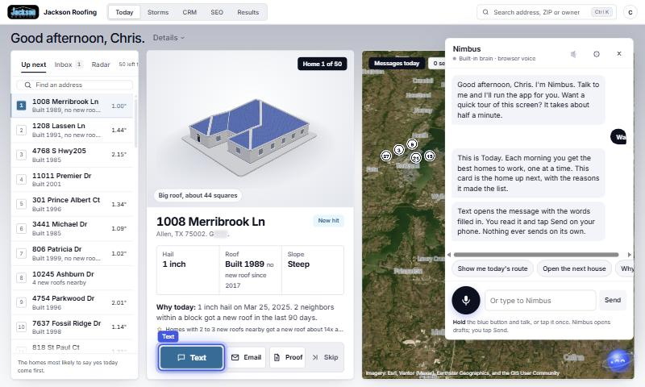

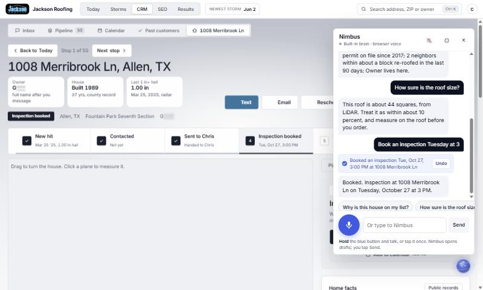
Check: start python scripts/nimbus/server.py, then open Today, tap the Nimbus ball and say or type "open the next house". Needs your yes: Claude sign-in or an API key for the Claude brain, and ElevenLabs paid plan before roofers use that voice (free tier is non-commercial).
Roof outline lines up with the photo, bigger photo, the photo on the Today card, no map spokes, "Texting hours"done Oct 26 (local only)
- The yellow outline was squashed against the photo: Esri stretched a lat/long box to fit a square image (19% more ground north to south). The photo is now asked for in map metres (Web Mercator) and lines up. The public outline itself can still sit a few feet off a roof, so the record has a "Hide lines" button to see the photo alone.
- The record's photo now fills the panel (wide on a computer, full width on a phone), edge lengths at a readable size.
- Today's home card shows the roof from above by default, with "Photo | 3D" to switch (remembered).
- No more blue spoke lines from the office on Today's map. A sent message still draws its own line.
- "Messages go out until 8 pm" is gone everywhere: it now says "Texting hours: 9 am to 8 pm" (nothing sends on its own). The Nimbus note no longer pops up over the record's right panel.
- More plain words on the record's Next task: "1 inch hail here on Mar 25, 2025. No new roof on record since 2017."

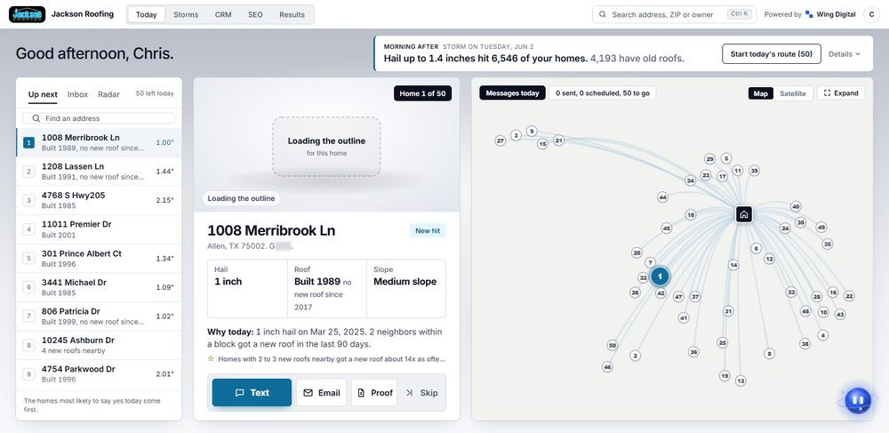

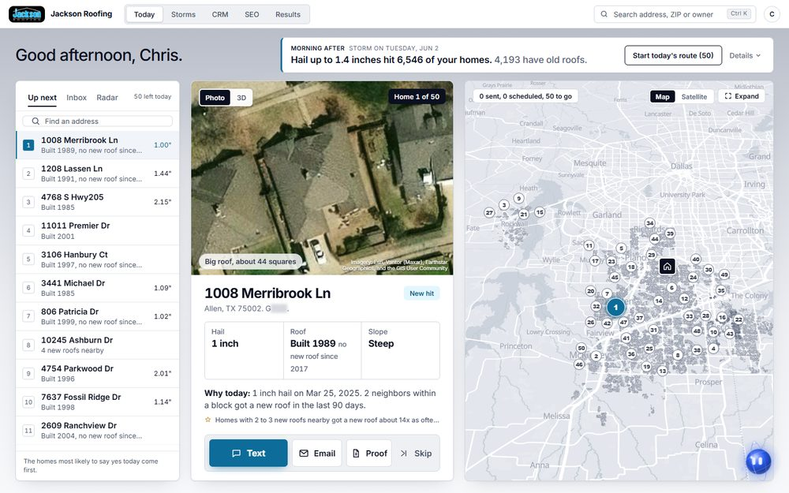

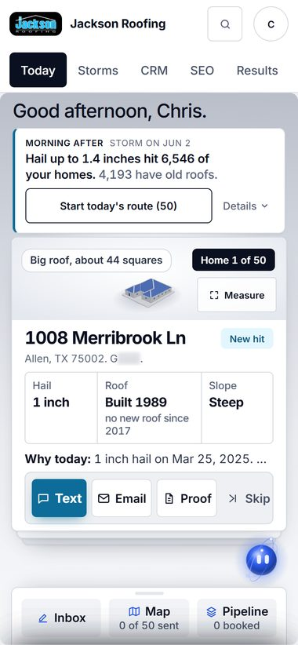

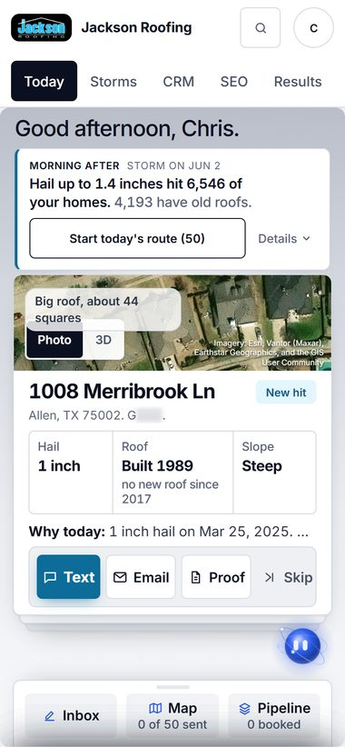

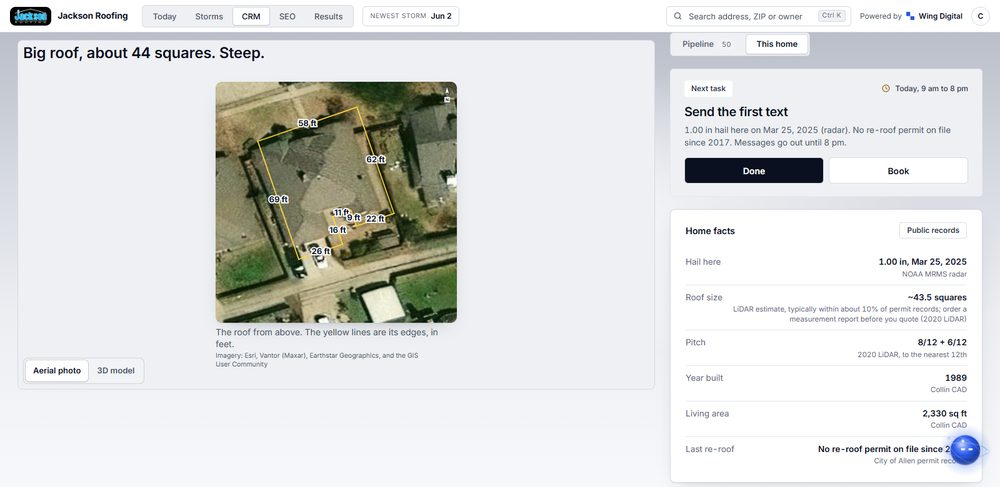

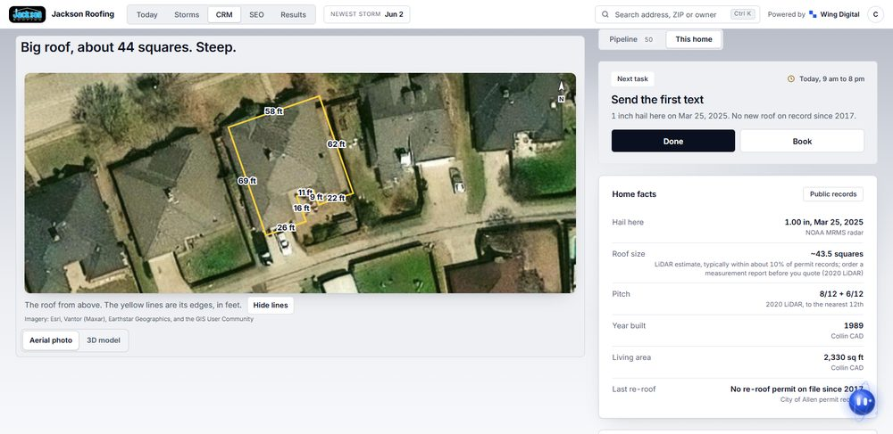

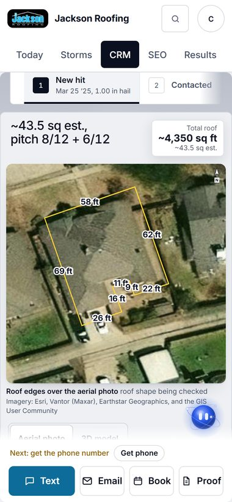

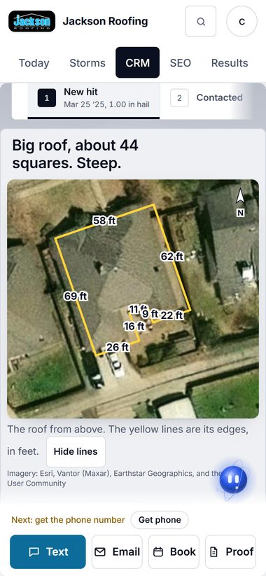

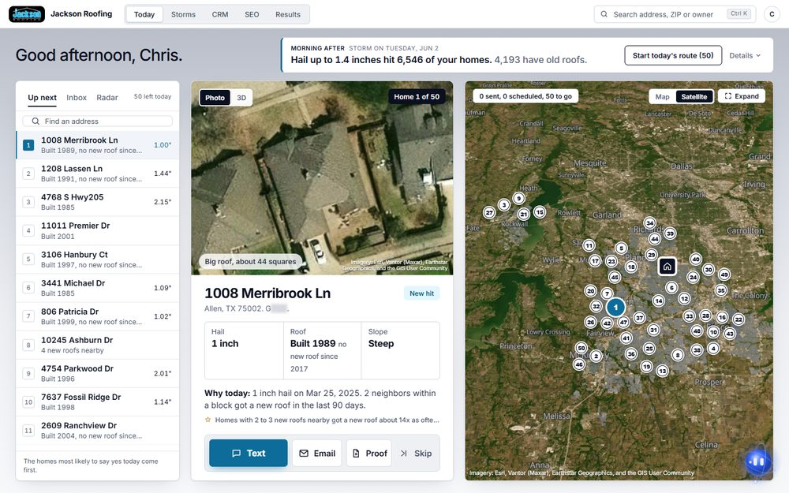
Check: open Today, try Photo | 3D on the card and Map | Satellite on the map, then open the first home and press Hide lines.
Re-roof permits for Richardson and Rockwall: real roof age for 21% of homes (was 16%)done Oct 26 (local only)
- Two new free sources, the cities' own permit reports: Richardson 8,585 roof permits since 2014 (both counties), Rockwall 5,664 since 2016. Placed on homes by address.
- Homes with a re-roof permit date: 22,453 to 34,319. Real roof age (permit date, or the original roof in a city with a complete list): 16.0% to 21.3% of 271,032 homes. Richardson 0 to 27% (Dallas County) and 2 to 39% (Collin), Rockwall 0 to 39%.
- The home record now says "Re-roofed May 2016 (permit 16-1234, Richardson)" or "No re-roof permit on file since 2014" in those two cities, and the Daily 50 trusts "no permit" there like McKinney and Allen.
- Turnover back-test: Collin still holds with the extra permits (held out 4.6x, 14.0x, 26.6x). Rockwall since 2023: 2.1x, 5.4x, 9.5x. Richardson since 2023 is weak (1.4x, 2.2x), though it was 3x to 17x in 2014 to 2022.
- Still missing: Plano and Frisco (half the homes). Both permit portals need an account; the free route is a public records request.
Check: new-city back-test, Collin back-test.
Plain words and bigger type on Today and the home recorddone Oct 26 (local only)
- No jargon on the surface: "Big roof, about 44 squares", "Steep", "1 inch hail", "no new roof since 2017". LiDAR, radar and pitch numbers (8/12) moved behind a hover or tap and onto the record's Home facts.
- The storm headline reads "Hail up to 1.4 inches hit 6,546 of your homes. 4,193 have old roofs."
- One obvious next button: the blue Text button on the home card is the only filled button on Today; "Start today's route" is now an outlined button.
- Bigger labels on the card and list. The record's photo view says "The roof from above. The yellow lines are its edges, in feet."

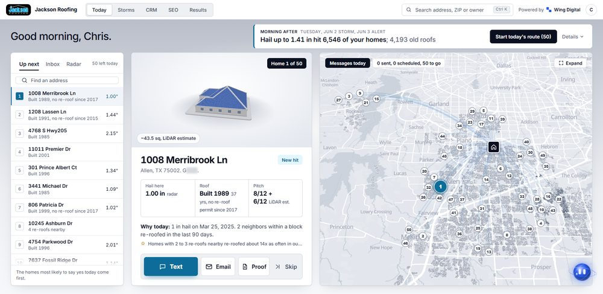

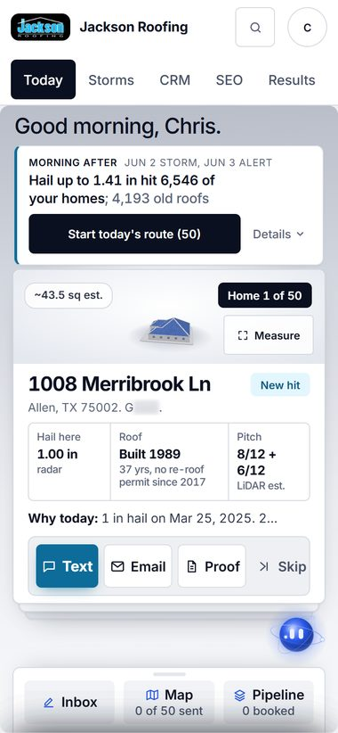

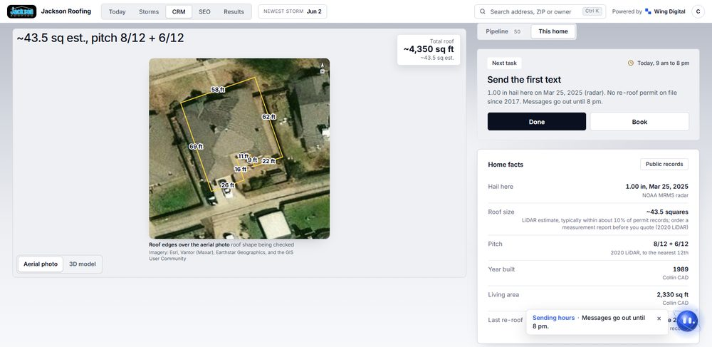
Check: open Today, hover a fact to see the measured number, then open the first home's record.
Storm-check page: people who search "roofer Plano" leave their own number, with consent and the sourcedone Oct 26 (local only, cloud save waits for Jack's yes)
- No one can legally buy "who googled a roofer". The legal way: be the page they land on. Ranked options with costs and the Texas and TCPA notes:
docs/INTENT-LEADS.md. - New public page: type an address, see the radar hail at that home for every storm on file, roof size and year built, a plain "what this means" box, then ask for a free inspection. The text consent box is unticked and optional (email only is fine). Addresses outside the data can still ask.
- Every lead keeps where it came from (Google Business Profile, Google or Meta ads with the campaign, organic search, Nextdoor, QR sign...), lands on the pipeline at "Sent to Chris" with source SEO / website form, and the exact consent words with their version.
- Cloud save is written (Edge Function
web-lead, into the encrypted contact store) but not deployed: it needs 011/012 applied first. Until then a lead lives only in the browser that sent it. No ad pixels on the page. Nothing bought, sent or signed up.
Check: open the storm-check page (try 2100 Parkhaven; add &ballpark=demo for the placeholder price), submit with a 555-01xx number, then see it in the Inbox.
Sharp aerial photo: the home record opens on it, and Today's map has a Satellite switchdone Oct 26 (local only)
- Home record: the main view is now the aerial photo with the measured roof edges on it, each length in feet ("41 ft"). The 3D model is one tap away (Aerial photo | 3D model), and the choice is remembered.
- The photo is Esri World Imagery (about 0.3 m, captured Oct 8, 2025 at Allen) instead of NAIP (about 0.6 to 1 m, the blocky one). Shown live only, never stored, with Esri's credit line. If Esri fails, NAIP shows, now smoothed instead of blocky.
- Today's map: a Map | Satellite switch next to Expand, remembered on this device. Pins get a white ring and place names turn white on the photo. The Storms map's Satellite view uses the same imagery.
- The "Sending hours" note and other Nimbus updates no longer pop up over the photo.
- Public preview: stays on NAIP until an ArcGIS key is set (Esri's terms need a key for a customer-facing app). The key is read at runtime, never written into the code.

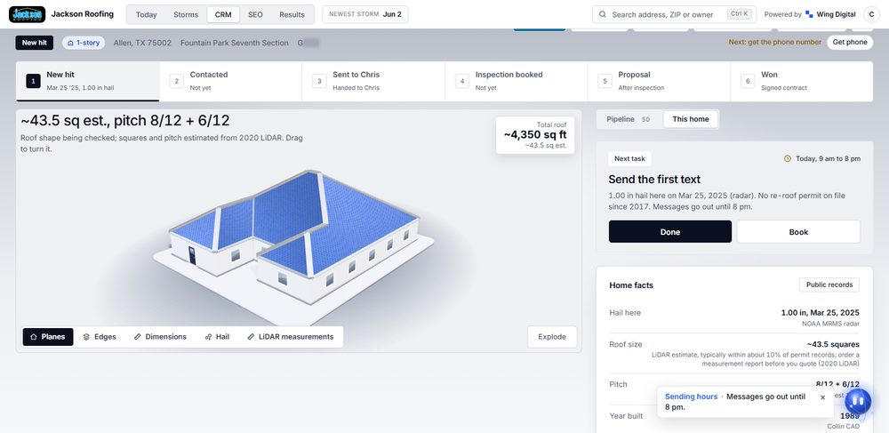

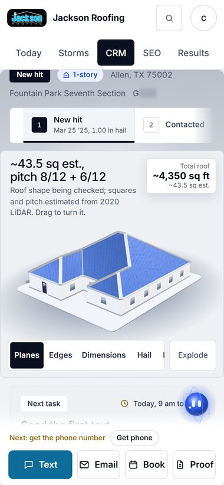

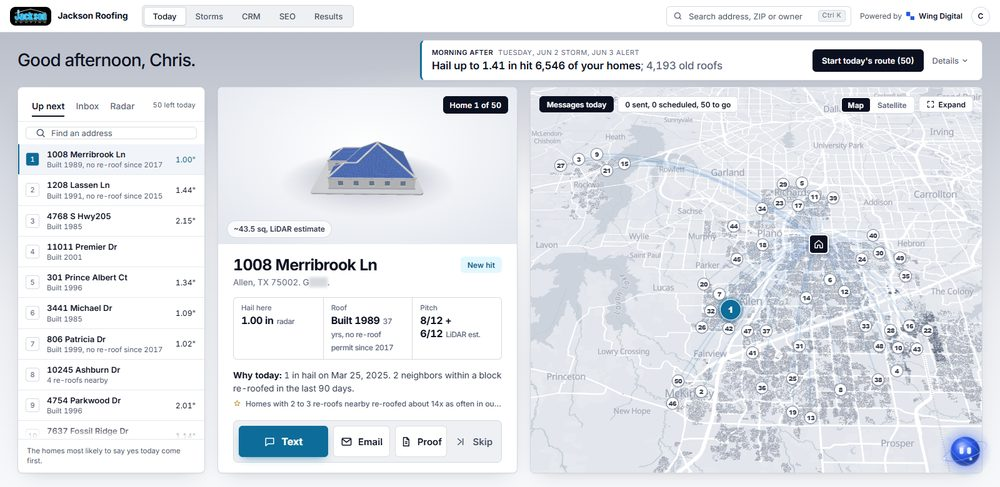

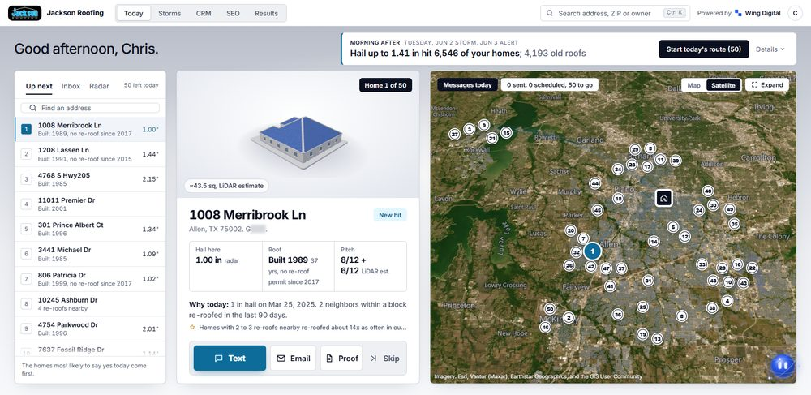
Check: open Today, switch the map to Satellite, then open the first home's record.
Today screen simplified: one hero, a clean house, one-line rows, a calmer mapdone Oct 26 (local only, public link not republished)
- Top area is one row: the greeting and the morning-after headline ("Hail up to 1.41 in hit 6,546 of your homes; 4,193 old roofs") with one button, Start today's route (50). The proof line, the stat strip, the 0.75 in+ count, cities, top streets, Past alerts and Hide for today are behind Details. A quiet day shows a small Details link next to the greeting.
- Home card: the 3D house has its own band and never sits on text. The squares chip is one line (~43.5 sq, LiDAR estimate); the accuracy note is on the record. The proof star line is one line until tapped.
- List rows: address, one short reason, hail size. No owner blur bar on every row; the full reason shows on hover and on the card.
- Map: spokes much fainter, waiting pins smaller, the base label only on hover, the "homes hit" chip removed (it is the hero headline), and Nimbus updates no longer pop up over the map.
- Header: the roofer's name never gets cut, the storm chip steps out on Today and shows just the date elsewhere, "Powered by" only on wide screens, and the public build's "See the proposal" is a quiet outline link instead of a big blue button.
- Home record: the floating build stamp no longer covers the house on short windows and phones (its facts are in the title and Home facts).
- Phone: the card fits above the bottom bar, the action buttons no longer cover the address and facts.

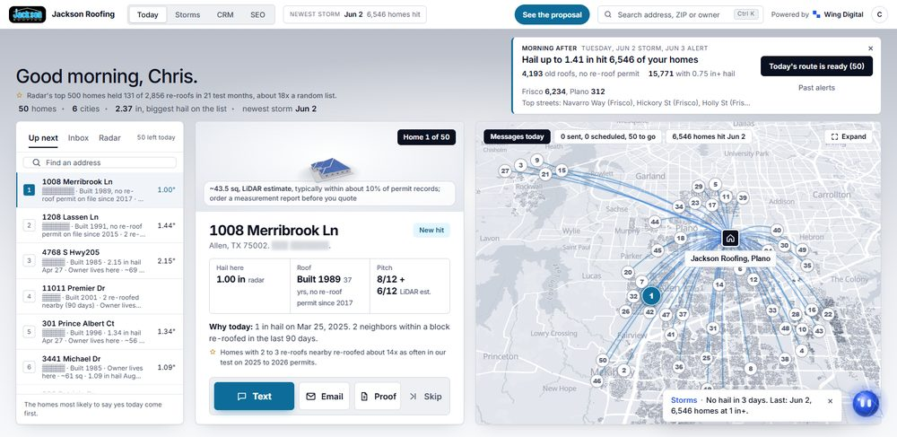

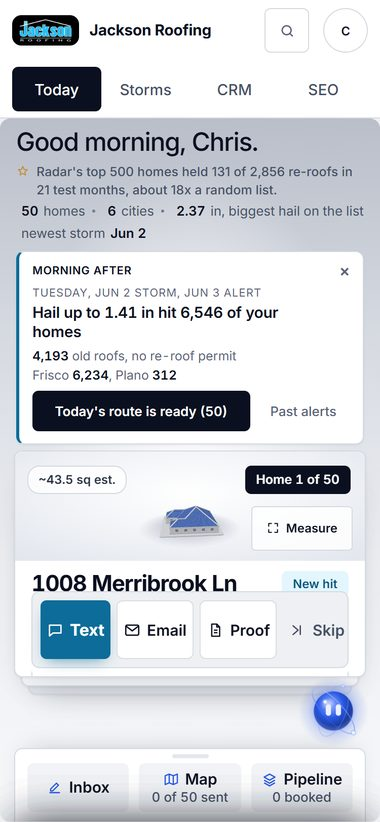
Check: open Today with the Jun 3 alert, click Details, then open the first home's record.
Homeowner contacts stored safely in Supabase, lead sources, and a Results tabdone Oct 26, live in the database
- New secure contact store for each roofer: owner name, phones and emails encrypted in the database (key in Supabase Vault), a roofer only ever sees its own homes, lists show the last 4 digits only, and every time someone opens the full contact it is written to an audit log nobody can edit.
- Opt-out (STOP) is honored everywhere at once: the do-not-contact list, the cloud sender's suppression list, the day's call list and the home's automation are all stopped. Users cannot undo it in the cloud.
- The app sends contact info there only when signed in with cloud on. With
cloud=0nothing leaves the laptop. Sample phones never go up. The public preview never includes it (build check added and passing). - Every lead now records where it came from (Daily 50, Turnover Radar, morning-after alert, Storms map, Proof Page, past-customer referral, SEO / website form, manual), each stage change with its time, and the job value when marked won (new optional field in Mark as won).
- New Results tab: this week, this month or 90 days. Homes reached, replies, inspections, proposals, jobs won and revenue, by source; alerts and what they led to; reviews and referrals; SEO pages published. Counts only, no names.
- Weekly summary for each roofer as HTML and PDF:
python scripts/results/weekly_summary.py --roofer jackson. Generate only, it never sends. - Live in Roof Command's database (Oct 26). Proven twice:
scripts/vault/test_vault.py(test roofers, rolled back) andscripts/vault/e2e_cloud.py(a test user saving a contact and a lead source through the real API, cleaned up after). Details:docs/CONTACT-VAULT.md. - Also Oct 26: the older plain-text contact table is closed to app users (only the cloud engine reads it), and the Proof Page now sends a homeowner's consent words and STOP from their own phone straight to the roofer's secure store (rate limited, tested with a test roofer and cleaned up).
Check: open the Results tab, switch the period, mark a home won with a job value in the pipeline and see it under its source.
SEO tab: every blog post and service page Wing published for the rooferdone Oct 26
- New SEO tab next to Today, Storms and CRM. 32 real pages on the Jackson site (21 blog posts, 11 service pages), each with type, publish date, target keyword where Wing's records name one, and a link to the live page. Filter by blog or service page.
- Header: pages published, blog posts, service pages, published this month. "Coming next" lists the 3 topics really queued in the content engine.
- No Search Console numbers: Jackson has no GSC property connected, so no clicks are shown. The script takes a real GSC export with
--gsconce one exists. - Refresh:
python scripts/seo/build_seo_jackson.pyrebuildstour/lib/seo-jackson.jsonfrom the site repo and checks every page is live. Ships in the preview build.
Check: open the SEO tab, try the filter, open a page link. Phone: same link at 375 wide.
Morning-after storm alert: card on Today, storm route, alert history, owner text and email (off until set up)done Oct 26
- The morning after 1 in+ hail hits the roofer's homes, the daily StormWatch run writes one alert: storm day, biggest hail, homes hit, old roofs with no re-roof permit on file, top streets and a 50-home route, street by street. Tested on the real Jun 2 storm: 1.41 in, 6,546 homes hit, 4,193 old roofs with no permit, Navarro Way, Hickory St and Holly St in Frisco on top.
- Today shows a "Morning after" card only on the storm morning and the next day; a quiet day shows nothing. "Today's route is ready" opens the route (tap a home for its record, or put the whole route on Today's list, with Undo). "Past alerts" lists every alert on file (Jun 2, Apr 27, Mar 4).
- For the owner: a ready email and text per storm in
data/alerts/. A sender is wired behind a switch that is off; nothing has been sent and no provider is set up. What Jack needs to turn it on:scripts/alerts/README.md.
Past customers: reviews, referrals, testimonials and the neighbors to knockdone Oct 26
- New CRM view, Past customers: import a CSV of past jobs (a column mapper guesses the columns, and reads the onboarding packet's template) or add one by hand. Kept on the device.
- Three asks per customer, each one tap that opens Messages or the mail app with the words filled in, in the roofer's voice: a Google review ask with the roofer's review link (set once on the page), a referral ask ("know a neighbor who had hail damage?") and a testimonial ask (a short reply or a phone video). Texts end with STOP wording; no insurance or deductible talk; the roofer presses send.
- Status per customer per ask (asked, replied, review left / referral given / testimonial in) and a summary row. A referral's address becomes a new lead on the pipeline and Today's list when it is one of the roofer's homes.
- Knock the neighbors: the 24 nearest homes around a past job, street by street, with "Put them on Today's list".
- The local app starts empty with the Import button. The public preview build alone seeds five obviously sample customers (tagged Sample, 555 numbers); its no-names checks still pass. The public link was not republished.
Roofer onboarding packet: welcome, checklist, 14-day plan, kickoff, rep quick-start, FAQ, intake formdone Oct 26
- Seven light-theme pages a signed roofer gets on day 0, Wing on the left and the roofer's logo on the right. Phone-friendly, and each prints cleanly to PDF.
- Nothing names a roofer in the pages: every detail (name, logo, colours, contact, hours, state rules) comes from one config file,
tour/onboarding/assets/roofers.js. Jackson is the first config; a blank template is the default. - Intake form builds a downloadable file and summary on the roofer's device; it sends nothing. Past-customer CSV template included.
- PDFs for Jackson and the blank template, one per page plus the full packet:
tour/onboarding/pdf/. Rebuild withpython -E tour/onboarding/make_pdfs.py.
UI polish from the visual check: phone record bar, phone 3D house, Radar street map, Nimbus, storm timelinedone Oct 24
- Home record on a phone: the bottom bar is about half as tall ("Add phone" is a small pill again, buttons 48px).
- Today on a phone: the 3D house sits in the middle of the photo strip with nothing over it; the squares chip ("~43.5 sq est.") moved up beside "Home 1 of 50"; the card's how-we-help line is one line, tap to read it all.
- Today's map: opening a street on the Radar tab now shows that street's homes as ringed dots (it used to show an empty map with one stray line).
- Nimbus panel: no empty grey band above the chat. Storms timeline: the tallest storm tick no longer runs through the title.
- Still yours: the Texas 53.255 line, the sharper photo key (Esri), the "Sent to Chris" stage name, and one look at desktop Storms in a real browser.
Visual check follow-ups: Proof Page wording, faster Radar tab, small fixesdone Oct 24
- Proof Page: the hail card now says "Most recent 1 in+ hail" over the big number and "Biggest on file: May 22, 2024, 1.38 in" on its own line, so the two storms no longer read as a contradiction.
- Today's Radar tab: the street list showed about 8 seconds after the tap on a phone; now about 2. The morning job also writes a lighter Radar file (no per-home rows or map dots, 120 KB instead of 306 KB) that loads once at startup and is shared by the tidbits and the Radar list. The map dots, Proof Page and Daily 50 still use the full file.
- Small fixes: US spelling on the Storms "Hit hardest" panel (neighborhoods), no meaningless red square on the Today photo chip, "Inspection booked" no longer cut on the phone Pipeline, and the record's Roof box shows squares and pitch on one line each.
- Still yours: the proposal's Texas 53.255 line, plus 8 smaller layout and naming calls on the check page.
Visual check of every screen, desktop and phonedone Oct 23
- Every screen clicked through like a rep and like the owner at desktop and phone: Today (Up next, Inbox, Radar), Storms map, CRM (inbox, pipeline, calendar), a home record and its LiDAR measurements, the proposal, the homeowner hail report, the Proof Page and Nimbus. No sideways scroll anywhere; no em dashes or broken values in any screen's text.
- 12 fixes: the Today squares chip now uses the standard wording ("LiDAR estimate, typically within about 10% of permit records; order a measurement report before you quote") and one decimal like the CRM; phone card buttons fit; the how-we-help line stays right under the greeting; no stray dot on a wrapped stats line; the header search placeholder no longer cut off; the record's key-facts row a third of its old height; LiDAR measurements tab inset; Pipeline totals in whole squares; "Tap" on phone Calendar; hail report table no longer squeezed and phone chart labels whole; Nimbus panel padding; "Sending hours" toast label.
- Left for you, by impact: the proposal's Texas disclosure placeholder, phone Radar slow to load in the check, which storm the Proof Page leads with, and 10 smaller items.
Homeowner Proof Page: the pitch homeowners get by text and email (Bet 3)done Oct 23
- One public page per house that a rep sends by hand in a text or email: radar hail at the address on the storm date, how close the nearest National Weather Service hail report was, a dot map of the street, how many neighbors re-roofed (counts only, from Turnover Radar), year built, re-roof permits, and the LiDAR roof size with the standard estimate wording. Every fact shows its source. No owner names, phones or emails, and it is hidden from search engines.
- A "Book a free inspection" button and a consent box (Texas and federal texting wording, unticked by default; booking works without it). A yes is saved on the house record so follow-up texts become legal, plus a "Don't contact me again" link.
- In the app: a "Proof page" button on the house record and a "Proof" button on Today's cards open the draft (4 moments: after the storm, follow-up, after the door, after they opened it; text or email; 2 or 3 versions each with the one to lead with marked). You tap send on your phone; nothing sends by itself. The record shows when it was sent, opened, and when the homeowner said yes or asked for an inspection. Sending unlocks the owner's full name.
- Lead pick for a cold first text: ask first ("Want me to text it over?"), send the link when they say yes. Email carries the link from the first touch. Facts vs opinion with sources in the templates file.
- Legal checklist (federal texting and Do Not Call rules, Texas telemarketing laws after SB 140, CAN-SPAM) with sources and lawyer questions.
Map: satellite view + custom-measured 3D housesdone Oct 23
- A "Satellite | 3D houses" switch on the Storms map (bottom left; on a phone, the pill under the storm chips). The map remembers your pick on this device.
- Satellite: an aerial photo (USDA NAIP, public domain, free to use in the app) with each house's roof lines on it, lengths in feet when you zoom in close. Houses whose roof model passed its checks show every ridge, hip, valley and eave (solid lines). Every other house shows only its outline lengths, dashed, marked "~" as an estimate. Hit homes are tinted blue; click or tap a house to open it.
- Sharper photo option: Esri World Imagery is wired in and turns on with a free ArcGIS Location Platform key (Jack to create; 2 million tiles a month free, commercial use allowed only with the key).
- 3D houses: every house is its own shape: its outline, its wall height from the LiDAR story count, and a clean hip roof at its own LiDAR pitch. 216,421 houses across Plano, Frisco, Allen and McKinney (Collin and Denton). About 92% have a LiDAR pitch; the rest use 6/12 and say so. Roof models that passed their checks show as brown roofs. Hovering a house says "Roof shape est." or "measured model". Hail shows as colour on the houses instead of tall columns.
- The house record's LiDAR measurements view and the map now read the same roof lines.
docs/map-views.md.Small "how this helps" notesdone Oct 23
- One quiet line under Today's greeting, a different one each day, with a small star icon; tap it to see where the number comes from. Examples today: "10,196 homes re-roofed in the last 5 years are skipped, so fewer wasted doors", "Radar's top 500 homes held 131 of 2,856 re-roofs in 21 test months, about 18x a random list", "Hail radar checked every morning, through Oct 22", "You reached N homes this week" (once you have).
- On a home card with 2 or more re-roofs nearby: "Homes with 2 to 3 re-roofs nearby re-roofed about 14x as often in our test on 2025 to 2026 permits."
- At the foot of the Radar tab: "Why this list" with the back-test result and the homes skipped.
- Every number is read from the data the morning job rebuilds; nothing is typed in.
Turnover Radar: streets re-roofing right nowdone Oct 23
- Every home gets a "re-roof wave" score from public re-roof permits (Collin county list plus McKinney and Allen city records): how many homes within about a block re-roofed in the last 90 days. Homes re-roofed in the last 5 years are left out everywhere. New permits are pulled every morning at 7:30 after the storm check, and the score and the Daily 50 rebuild from them.
- Today has a "Radar" tab: the streets where roofs are being replaced now, with how many homes there have not re-roofed. Tap a street to see its homes and zoom the map (orange dots are the permits); tap a home to open it.
- Storms map: a "Re-roofs" button (next to 3D / 2D) shows every re-roof permit of the last 90 days as an orange dot, in both the Satellite and 3D houses views; tap a dot to see the date, city and what it means. Off until you turn it on; the map remembers your choice. From Today's Radar tab, "See every re-roof on the Storms map" opens the map with the dots on. Open Storms
- The Daily 50 uses it: homes in a wave score higher and say why ("2 re-roofed nearby (90 days)").
- Proof, on 21 months the score never saw (2025 to 2026): homes with 4 or more re-roofs nearby re-roofed 26.9 times as often as homes with none (14.1 times with 2 to 3, 4.6 with 1). The top 500 homes held 131 of 2,856 re-roofs; a random 500 would hold about 7.
- Three extra checks (Oct 23): adding Turnover to the Daily 50 more than doubles the re-roofs its top 500 catches (61 vs 27 in the test months); the result barely moves when likely one-contractor batches are dropped; using only McKinney's own month-dated records the lift is smaller (about 3x and 9x) on small counts. All on the back-test page.
- Daily 50 weight raised (Oct 23, Jack's yes): the re-roof wave signal now counts 30 of 100 points (was 15), the others scaled down. On the test months its top 500 caught 80 re-roofs instead of 61 (top 2,000: 256 instead of 249), and the list still keeps most of its hail and older-roof homes. Today's 2,400 candidates now include 758 homes in a wave (was 474).
Key facts first, hidden names, one squares linedone Oct 23
- Every house record opens with one row: owner, house age ("Built 2016, 10 yrs"), last 1 inch+ hail (date and size, radar), last re-roof permit, roof squares.
- Names before you message: first letter of first and last name, the rest a soft blur ("B▒▒▒▒▒ R▒▒▒▒▒"); the hidden part is filler characters, never the real letters. After a text or email goes out, the full name shows. Public version: initials only.
- Every squares figure says "LiDAR estimate, typically within about 10% of permit records; order a measurement report before you quote" (Today's small roof chip uses the short form "~47 sq, LiDAR ~10% est., order a report before quoting" so it fits a phone): house record, Today's card, map house panel, proposal, measurements view.
- House age also on Today's card and the map's house panel.
LiDAR measurements viewdone Oct 23
- A "LiDAR measurements" button on the house's 3D view opens the roof lines tab.
- Houses whose roof model passed its checks: every ridge, hip, valley and eave with its length in feet and the pitch of each face.
- Every other house: its outline over the aerial photo with each wall run in feet (marked as an estimate), plus LiDAR squares and pitch. No ridge or valley lines until the shape passes.
Storm watcher back on, old roof job offdone Oct 23
- Storm watcher runs daily at 7:30 am and now feeds this app. First scheduled run Oct 24. Test run worked (no new storms through Oct 22).
- The old daily roof-improvement job is turned off (not deleted).
Phone-size passdone Oct 23
- No sideways scrolling on any screen at phone width.
- Homeowner hail report is one clean column; Today's roof label no longer covers "Home 1 of 50"; the double period in names is fixed.
- House record headline trimmed to squares and pitch; proposal's "Back to the home" stays on screen.
tour/audit/repday/phone-after/).Jackson build-out, batch 2done Oct 22
- Storm map's house panel shows only real facts (no guessed story count, plane counts or "no permit" where no permit list exists).
- Nimbus: "biggest storm last year" now answers Mar 25, 2025 (23,148 homes); "what's in my pipeline" no longer says empty.
- Storm data confirmed current; storm map to neighborhood to house works.
Jackson build-out, batch 1done Oct 22
- Pipeline was blank on desktop: fixed.
- Proposal: rep enters price per square, squares start at the LiDAR estimate and can be edited, total calculates; roof drawing only when the model passed; clean print/PDF.
- Fake 555 phone numbers removed; "Add phone" on the record; text uses the real number.
- Today's roof chip says "LiDAR est., shape being checked", never "measured".
- One house walked through the whole flow (new lead to won) with no errors.
Re-roof permits for all of Collin Countydone Oct 22
- Plano, Frisco and the rest of Collin now show county re-roof permits; McKinney and Allen city permits (28,930 homes) too. Lead score uses them.
- No permit shows as "No re-roof permit on file since 2015/2017", never "original roof".
Lead card: only reliable facts, each with its sourcedone Oct 22
- Right house, LiDAR squares (estimate), pitch, year built, living sq ft, last re-roof, hail history.
- 3D roof only when it passes its checks, otherwise "Roof shape being checked".
Owner names: initials until messageddone Oct 19
- About 271,000 homes have owner names (private). Initials until a text or email goes out, then the full name. Public version: initials only. Name search only finds messaged homes.
New features (UI upgrade)done Oct 19
- Hail section on each house, door-knock buttons, Materials tab, storm report, walk sheets.
Roof accuracy (research, now stopped)
Roof shape workstopped Oct 22
- Answer key: 36 Frisco homes with roofer squares; our LiDAR squares typically within 7 to 9%. Answer key report
- Side-by-side checks: app vs satellite vs ours, 3DBAG roofs from the top.
- Exact shapes came out right on about 1 in 4 brand-new houses, so the app shows a 3D roof only where it passes.
Waiting on you
- Publish to the live Jackson site: the Cloudflare upload and Chris's login.
- Texas Property Code 53.255 disclosure line on the printed proposal: real text from a lawyer, or remove it.
- Pick which big bet to build once the research reports.
- Proof Page, before any cold text goes out: (1) check every phone against the National Do Not Call list and the Texas no-call list (these rules cover texts sent by hand too; the app has no check for this yet); (2) a Texas lawyer on Business and Commerce Code 305.001 (sales calls to cell phones need consent) and whether Jackson is exempt from Texas telemarketing registration (302.059); (3) where consent and opt-out records are stored (today only on one device; keep them 5 years); (4) the roofer's own web address for the links; (5) Jackson's mailing address and a privacy policy link (emails are held until the address is on file); (6) approve the consent wording.